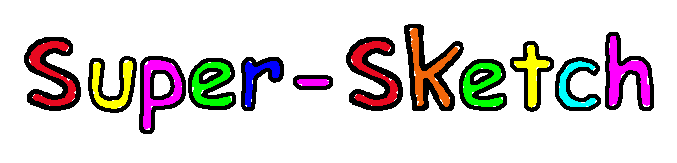

Voici notre projet d'ISN. Nous avons créé un jeu en Python de dessin en multijoueur. Le but est de deviner ce que dessine l'autre joueur le plus vite possible dans un temps limité.
Bête et Discipliné.
Comment Jouer ?
Il suffit d'inviter vos amis, de télécharger la dernière version du jeu, Python 3 et Pygame avec la commande python -m pip install pygame. Vous n'avez plus qu'à lancer Supersketch.py avec Python !
Un jeu en Réseau jusqu'à 4 joueurs
En réseau local
Un joueur héberge la partie et les autres peuvent le rejoindre automatiquement.
Depuis Internet
Un joueur héberge la partie, NAT le port 5000 de sa box et donne son IP aux autres joueurs.
Restez à jour
De nouvelles implémentations et corrections de bugs sont réalisées régulièrement par notre équipe. Revenez pour découvrir de nouvelles fonctionnalités !